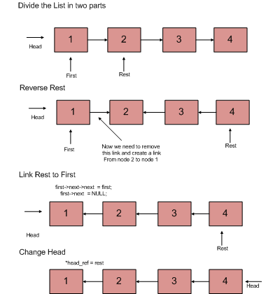

Given pointer to the head node of a linked list, the task is to reverse the linked list. We need to reverse the list by changing links between nodes.
Examples:
Input : Head of following linked list
1->2->3->4->NULL
Output : Linked list should be changed to,
4->3->2->1->NULL
Input : Head of following linked list
1->2->3->4->5->NULL
Output : Linked list should be changed to,
5->4->3->2->1->NULL
Input : NULL
Output : NULL
Input : 1->NULL
Output : 1->NULL
Iterative Method
Iterate trough the linked list. In loop, change next to prev, prev to current and current to next.
Implementation of Iterative Method
C
#include<stdio.h>
#include<stdlib.h>
/* Link list node */
struct Node
{
int data;
struct Node* next;
};
/* Function to reverse the linked list */
static void reverse(struct Node** head_ref)
{
struct Node* prev = NULL;
struct Node* current = *head_ref;
struct Node* next;
while (current != NULL)
{
next = current->next;
current->next = prev;
prev = current;
current = next;
}
*head_ref = prev;
}
/* Function to push a node */
void push(struct Node** head_ref, int new_data)
{
/* allocate node */
struct Node* new_node =
(struct Node*) malloc(sizeof(struct Node));
/* put in the data */
new_node->data = new_data;
/* link the old list off the new node */
new_node->next = (*head_ref);
/* move the head to point to the new node */
(*head_ref) = new_node;
}
/* Function to print linked list */
void printList(struct Node *head)
{
struct Node *temp = head;
while(temp != NULL)
{
printf("%d ", temp->data);
temp = temp->next;
}
}
/* Driver program to test above function*/
int main()
{
/* Start with the empty list */
struct Node* head = NULL;
push(&head, 20);
push(&head, 4);
push(&head, 15);
push(&head, 85);
printf("Given linked list\n");
printList(head);
reverse(&head);
printf("\nReversed Linked list \n");
printList(head);
getchar();
}
Java
// Java program for reversing the linked list
class LinkedList {
static Node head;
static class Node {
int data;
Node next;
Node(int d) {
data = d;
next = null;
}
}
/* Function to reverse the linked list */
Node reverse(Node node) {
Node prev = null;
Node current = node;
Node next = null;
while (current != null) {
next = current.next;
current.next = prev;
prev = current;
current = next;
}
node = prev;
return node;
}
// prints content of double linked list
void printList(Node node) {
while (node != null) {
System.out.print(node.data + " ");
node = node.next;
}
}
public static void main(String[] args) {
LinkedList list = new LinkedList();
list.head = new Node(85);
list.head.next = new Node(15);
list.head.next.next = new Node(4);
list.head.next.next.next = new Node(20);
System.out.println("Given Linked list");
list.printList(head);
head = list.reverse(head);
System.out.println("");
System.out.println("Reversed linked list ");
list.printList(head);
}
}
// This code has been contributed by Mayank Jaiswal
Python
# Python program to reverse a linked list
# Time Complexity : O(n)
# Space Complexity : O(1)
# Node class
class Node:
# Constructor to initialize the node object
def __init__(self, data):
self.data = data
self.next = None
class LinkedList:
# Function to initialize head
def __init__(self):
self.head = None
# Function to reverse the linked list
def reverse(self):
prev = None
current = self.head
while(current is not None):
next = current.next
current.next = prev
prev = current
current = next
self.head = prev
# Function to insert a new node at the beginning
def push(self, new_data):
new_node = Node(new_data)
new_node.next = self.head
self.head = new_node
# Utility function to print the linked LinkedList
def printList(self):
temp = self.head
while(temp):
print temp.data,
temp = temp.next
# Driver program to test above functions
llist = LinkedList()
llist.push(20)
llist.push(4)
llist.push(15)
llist.push(85)
print "Given Linked List"
llist.printList()
llist.reverse()
print "\nReversed Linked List"
llist.printList()
# This code is contributed by Nikhil Kumar Singh(nickzuck_007)
Given linked list 85 15 4 20 Reversed Linked list 20 4 15 85
Time Complexity: O(n)
Space Complexity: O(1)
Recursive Method:
1) Divide the list in two parts - first node and rest of the linked list. 2) Call reverse for the rest of the linked list. 3) Link rest to first. 4) Fix head pointer

void recursiveReverse(struct Node** head_ref)
{
struct Node* first;
struct Node* rest;
/* empty list */
if (*head_ref == NULL)
return;
/* suppose first = {1, 2, 3}, rest = {2, 3} */
first = *head_ref;
rest = first->next;
/* List has only one node */
if (rest == NULL)
return;
/* reverse the rest list and put the first element at the end */
recursiveReverse(&rest);
first->next->next = first;
/* tricky step -- see the diagram */
first->next = NULL;
/* fix the head pointer */
*head_ref = rest;
}
Time Complexity: O(n)
Space Complexity: O(1)
A Simpler and Tail Recursive Method
Below is C++ implementation of this method.
C++
// A simple and tail recursive C++ program to reverse
// a linked list
#include<bits/stdc++.h>
using namespace std;
struct Node
{
int data;
struct Node *next;
};
void reverseUtil(Node *curr, Node *prev, Node **head);
// This function mainly calls reverseUtil()
// with prev as NULL
void reverse(Node **head)
{
if (!head)
return;
reverseUtil(*head, NULL, head);
}
// A simple and tail recursive function to reverse
// a linked list. prev is passed as NULL initially.
void reverseUtil(Node *curr, Node *prev, Node **head)
{
/* If last node mark it head*/
if (!curr->next)
{
*head = curr;
/* Update next to prev node */
curr->next = prev;
return;
}
/* Save curr->next node for recursive call */
node *next = curr->next;
/* and update next ..*/
curr->next = prev;
reverseUtil(next, curr, head);
}
// A utility function to create a new node
Node *newNode(int key)
{
Node *temp = new Node;
temp->data = key;
temp->next = NULL;
return temp;
}
// A utility function to print a linked list
void printlist(Node *head)
{
while(head != NULL)
{
cout << head->data << " ";
head = head->next;
}
cout << endl;
}
// Driver program to test above functions
int main()
{
Node *head1 = newNode(1);
head1->next = newNode(2);
head1->next->next = newNode(3);
head1->next->next->next = newNode(4);
head1->next->next->next->next = newNode(5);
head1->next->next->next->next->next = newNode(6);
head1->next->next->next->next->next->next = newNode(7);
head1->next->next->next->next->next->next->next = newNode(8);
cout << "Given linked list\n";
printlist(head1);
reverse(&head1);
cout << "\nReversed linked list\n";
printlist(head1);
return 0;
}
Java
// Java program for reversing the Linked list
class LinkedList {
static Node head;
static class Node {
int data;
Node next;
Node(int d) {
data = d;
next = null;
}
}
// A simple and tail recursive function to reverse
// a linked list. prev is passed as NULL initially.
Node reverseUtil(Node curr, Node prev) {
/* If last node mark it head*/
if (curr.next == null) {
head = curr;
/* Update next to prev node */
curr.next = prev;
return null;
}
/* Save curr->next node for recursive call */
Node next1 = curr.next;
/* and update next ..*/
curr.next = prev;
reverseUtil(next1, curr);
return head;
}
// prints content of double linked list
void printList(Node node) {
while (node != null) {
System.out.print(node.data + " ");
node = node.next;
}
}
public static void main(String[] args) {
LinkedList list = new LinkedList();
list.head = new Node(1);
list.head.next = new Node(2);
list.head.next.next = new Node(3);
list.head.next.next.next = new Node(4);
list.head.next.next.next.next = new Node(5);
list.head.next.next.next.next.next = new Node(6);
list.head.next.next.next.next.next.next = new Node(7);
list.head.next.next.next.next.next.next.next = new Node(8);
System.out.println("Original Linked list ");
list.printList(head);
Node res = list.reverseUtil(head, null);
System.out.println("");
System.out.println("");
System.out.println("Reversed linked list ");
list.printList(res);
}
}
// This code has been contributed by Mayank Jaiswal
Python
# Simple and tail recursive Python program to
# reverse a linked list
# Node class
class Node:
# Constructor to initialize the node object
def __init__(self, data):
self.data = data
self.next = None
class LinkedList:
# Function to initialize head
def __init__(self):
self.head = None
def reverseUtil(self, curr, prev):
# If last node mark it head
if curr.next is None :
self.head = curr
# Update next to prev node
curr.next = prev
return
# Save curr.next node for recursive call
next = curr.next
# And update next
curr.next = prev
self.reverseUtil(next, curr)
# This function mainly calls reverseUtil()
# with previous as None
def reverse(self):
if self.head is None:
return
self.reverseUtil(self.head, None)
# Function to insert a new node at the beginning
def push(self, new_data):
new_node = Node(new_data)
new_node.next = self.head
self.head = new_node
# Utility function to print the linked LinkedList
def printList(self):
temp = self.head
while(temp):
print temp.data,
temp = temp.next
# Driver program
llist = LinkedList()
llist.push(8)
llist.push(7)
llist.push(6)
llist.push(5)
llist.push(4)
llist.push(3)
llist.push(2)
llist.push(1)
print "Given linked list"
llist.printList()
llist.reverse()
print "\nReverse linked list"
llist.printList()
# This code is contributed by Nikhil Kumar Singh(nickzuck_007)
Output:
Given linked list 1 2 3 4 5 6 7 8 Reversed linked list 8 7 6 5 4 3 2 1
Thanks to Gaurav Ahirwar for suggesting this solution.
Iteratively Reverse a linked list using only 2 pointers (An Interesting Method)
Asked in: Accolite, Adobe, Cisco, Cognizant , IgniteWorld , Mahindra Comviva, Microsoft, Paytm, SAP, Snapdeal , Tejas Network, Teradata
References:
http://cslibrary.stanford.edu/105/LinkedListProblems.pdf